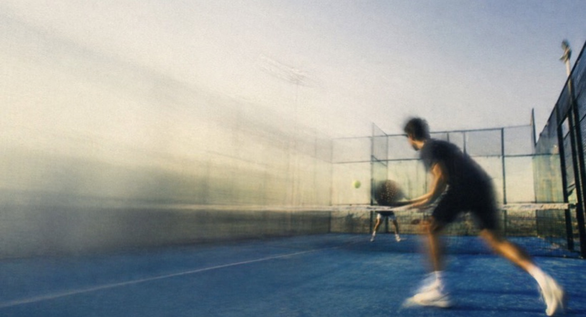

Bod 3 zadání · návrh nad testovací verzí
Návrhy přímo nad PC verzí
Stejné obrazovky, stejné kroky, stejné pořadí a stejná data jako v testovací verzi (7. 10. 2026), jen s naší vizuální vrstvou. Nic nepřidáváme do flow. U každé obrazovky je vpravo, co se mění. Obrazovky jsou v rozlišení 1280 × 800.
Event, ne turnaj„Turnaj“ jen jako název formátu.
Bílá a fotkyNavy jen sidebar a hlavičky.
Oranžová = akceTlačítka a výzvy, nic jiného.
Nic se neposílá samo„Sdílet odkaz“ jen předá text.
01 · /manage/…/prehled
Přehled komunity

Tvoje komunita
Kuba komunity
Teplice · 1 člen
Členové
1
za 30 dní beze změny
Nadcházející
2
9 odehraných celkem
Registrace
108
za posledních 30 dní
Platby
Na místě
Kartou přes Stripe, až budeš chtít ›

Nejbližší event · za 8 dníOtevřeno
Americano
čt 15. 10. · 08:00 · Padel Klub Novosedlice
0/12 přihlášeno · zbývá 12 míst
Potřebuje pozornost
!Padelový večer s grilem: 2 nezaplatiliPřipomenout
KčVybírej příště kartouPřipojit Stripe
Poslední aktivita
Ondřej P. se přihlásil na Padelový večer s grilem · před 3 dny
Co se mění
- „Tournament mode“ → Eventy, „Vytvořit turnaj“ → „Vytvořit event“.
- Banner komunity a karta nejbližšího eventu jsou fotky se ztmavením, ne tmavá plocha s logem.
- Zelené tlačítko WhatsApp → neutrální „Sdílet odkaz“. Otevře sdílení s předvyplněným textem, odešle ho organizátor.
- Karta „Příjmy · Připojit Stripe“ → „Platby · Na místě“. Stripe je nabídka, ne podmínka.
- Stav eventu jako štítek („Otevřeno“) přímo na kartě.
- Graf registrací zůstává, jen je přesunutý pod kartu (mimo výřez).
02 · /turnaje/create · krok 1
Průvodce: Typ a formát
Nový event
1Typ a formát2Termín a místo3Hráči a platba4Prezentace
Náhled pro hráče

Hráči se přihlásí sami. Rozpis se připraví až po potvrzení soupisky před startem.
Typ eventu *
🏆CompetitiveVýsledky, pořadí a výkon.
◎SocialKomunita, networking a lehčí tempo.
○TrainingVolnější hraní bez tlaku.
Formát *
AmericanoJednotlivci, rotující partneři
MexicanoŽebříček určuje další kolo
Round RobinPáry, každý s každým
Bez herního systémuRegistrace bez rozpisu
Jak funguje Americano · Každý hráč nastupuje sám. Po každém kole se losují nové dvojice i soupeři a body se sčítají do osobního žebříčku. 8–24 hráčů
Varianta Americana
ClassicJednotlivci, rotující partneři
TeamPevné dvojice po celý event
MixedRotace se smíšenými dvojicemi
ZrušitPokračovat ›
Co se mění
- Kroky, pole i pořadí jsou beze změny.
- Náhled vlevo je karta eventu se štítkem stavu „Koncept“ a fotkou místo tmavé plochy s logem.
- Vybraná volba je navy rámeček, oranžová zůstává jen u „Pokračovat“.
- „Nový turnaj“ → „Nový event“.
- Dnes: náhled na tmavém podkladu, vybrané karty oranžové, tlačítko „Registrovat a zaplatit“ i u eventu zdarma.
03 · /turnaje/create · krok 3 a 4
Průvodce: Hráči a platba
Nový event
✓Typ a formát✓Termín a místo3Hráči a platba4Prezentace
Kdo může hrát
Smíšení
Pouze muži
Pouze ženy
Úroveň odBez omezení
Úroveň doBez omezení
Viditelnost
Veřejný
Jen odkaz
Komunita
Vstupné a platba
Placený
Zdarma
Vstupné za hráče200 Kč
Jak se platí
Na místěvýchozíHotově nebo převodem u kurtu. Kdo zaplatil, si odškrtáš v soupisce.
Online kartou (Stripe)Připojíš kdykoli, i po zveřejnění. Do té doby hráči platí na místě.
ZpětPokračovat ›
Krok 4 · Prezentace
Text ke sdílení🎾 Páteční Americano
📅 pá 30. 10. · 18:00
📍 Padel Klub Novosedlice
👥 16 míst · Americano
Přihlas se tady 👇
📅 pá 30. 10. · 18:00
📍 Padel Klub Novosedlice
👥 16 míst · Americano
Přihlas se tady 👇
Předvyplní se, když sdílíš odkaz (WhatsApp, Messenger, SMS). Sám se nikam neposílá.
Publikovat eventZveřejnit jde vždy.Co se mění
- „Platba probíhá pouze online přes Stripe“ a varování bez Stripe nahrazují dvě volby: Na místě (výchozí) a Online kartou. Podle Kubova pravidla jde publikovat vždy.
- „WhatsApp zpráva“ → „Text ke sdílení“ s poznámkou, že se nic neposílá samo.
- „Publikovat turnaj“ → „Publikovat event“, tlačítko nikdy šedé.
- [OTÁZKA] V testovací verzi „na místě“ jako volba v průvodci chybí, i když ho starší eventy mají. Je to plánované?
04 · /turnaje/{id} · krok 1 enginu
Soupiska
AmericanoUzavřeno · příprava
Páteční Americano
pá 30. 10. · 18:00 · Padel Klub Novosedlice · 14 hráčů
1Soupiska2Nastavení3Rozpis4Spuštění
Kontrola před startem
Minimálně 4 hráčiPlatby: 6 kartou · 5 na místě · 3 nezaplacenoHraje 13 (1 nedorazila)Každé kolo odpočívá 1 hráč
Nezaplaceným pošle aplikace připomínku e-mailem. Připomenout 3
Potvrdit soupisku ›Co se mění
- Hlavička eventu je fotka s ztmavením a stavem („Uzavřeno · příprava“) místo samotného navy pruhu.
- U každého hráče stav platby ve třech barvách (Zaplaceno / Na místě / Nezaplaceno). Dnes je jen „Zdarma“.
- „Nedorazil“ se po kliknutí zbarví a řádek zešedne.
- V Kontrole před startem je počet nezaplacených a připomínka e-mailem.
- „Sdílet odkaz“ je i tady. Po zveřejnění je soupiska první, co organizátor vidí.
05 · krok 3 enginu
Rozpis
✓Soupiska✓Nastavení3Rozpis4Spuštění
Náhled rozpisu
↻ Přegenerovat rozpis3 kola · 6 zápasů · Nikdo nemá stejného parťáka 2× · soupeři 4–6 ze 7
1Kolo 12 zápasy
Kurt1
Tomáš NovákJan Kučera
vsPetr SvobodaLucie Benešová
Kurt2
Klára RůžičkováMartin Černý
vsAnna JelínkováLukáš Dvořák
Odpočívá: Ondřej Procházka
2Kolo 22 zápasy
Kurt1
Tomáš NovákAnna Jelínková
vsOndřej ProcházkaKlára Růžičková
Kurt2
Petr SvobodaMartin Černý
vsJan KučeraLukáš Dvořák
Odpočívá: Lucie Benešová
ZpětPokračovat ke spuštění ›
Co se mění
- Struktura zůstává: kolo jako karta s navy hlavičkou, kurt vlevo, jména pod sebou.
- Odznak kurtu je navy na světlém podkladu místo oranžového.
- Řádek „Odpočívá“ je přímo v kartě kola.
- Statistika partnerů je jedna věta se zelenou kontrolou.
06 · live
Průběh a zadání skóre
AmericanoProbíhá
Páteční Americano · aktivní kolo 2 ze 3
123
⏸ Pozastavit✎ Opravit⤴ Živé výsledky0915
ZapsánoTomáš Novák
Anna JelínkováOndřej Procházka
Klára Růžičková
Kurt 1Anna JelínkováOndřej Procházka
Klára Růžičková
0000
Zadat skórePetr Svoboda
Martin ČernýJan Kučera
Lukáš Dvořák
Kurt 2Martin ČernýJan Kučera
Lukáš Dvořák
Odpočívá: Lucie Benešová
+ Kolo navícDalší kolo ›
Co se mění
- Skóre je velké číslo nad každým týmem (jako v PadelMixu). Kliknutím na číslo se zadají body, druhý tým dostane zbytek.
- Oranžový okraj = čeká na skóre, zelený = zapsáno. Vítěz je navy, poražený šedý.
- Tabulka: Body a V-R-P, rozdíl jako barevný štítek. Sloupce Z, V, R, P zvlášť zabírají místo.
- Stav „LIVE“ a „Probíhá“ sjednocené na Probíhá.
- „Živé výsledky“ otevře odkaz a QR kód pro hráče.
07 · dokončeno
Odehráno: výsledky a peníze

AmericanoOdehráno
🏆 VÍTĚZ EVENTU
Klára Růžičková
49 bodů · 3 výhry · +18
Vybráno
2 400 Kč
Zaplaceno 12/14Přišlo 13/14Nezaplaceno 2
Tereza H., Jan K. · Připomenout e-mailem
Co dál
↻Další event · stejné nastaveníZaložit
◎Karta výsledku pro InstagramSdílet
KčVybírej příště kartouStripe
Co se mění
- Vítěz je karta s fotkou, ne tmavá plocha s konfetami.
- Nové: vybráno, zaplaceno, přišlo a nezaplaceno s připomínkou. Kuba si tuhle funkci bere do kódu.
- Nové: „Co dál“ s „Další event · stejné nastavení“ jako hlavní akcí.
- „Hotovo“ i „Dokončeno“ → Odehráno. „Vítěz turnaje“ → „Vítěz eventu“.
08 · /e/playoff-6-paru · záložka Playoff
Pavouk na stránce eventu
Padel LeagueKuba

PlayoffCompetitiveOdehráno
Playoff 6 párů
PřehledPlayoffVýsledky
Čtvrtfinále
Novák / Svoboda–
volný los
Veselý / Horák6:3
Němec / Marek
Dvořák / Černý–
volný los
Procházka / Kučera
Pokorný / Pospíšil6:4
Semifinále
Novák / Svoboda
Veselý / Horák6:3
Dvořák / Černý6:4
Pokorný / Pospíšil
Finále
Veselý / Horák6:4
Dvořák / Černý
Novák / Svoboda7:5
Pokorný / Pospíšil
Co se mění
- Fáze ve sloupcích vedle sebe místo jednoho dlouhého seznamu.
- Skóre jednou („6:3“), ne „1 : 0 (6:3)“. Vítěz tučně navy, poražený šedě.
- „BYE“ → „volný los“.
- Finále se zlatým rámečkem, zápas o 3. místo pod ním.
- Banner je fotka, stavy sjednocené („Dokončeno“ → „Odehráno“).
- Na telefonu fáze jako záložky, viz Vizuální vrstva.